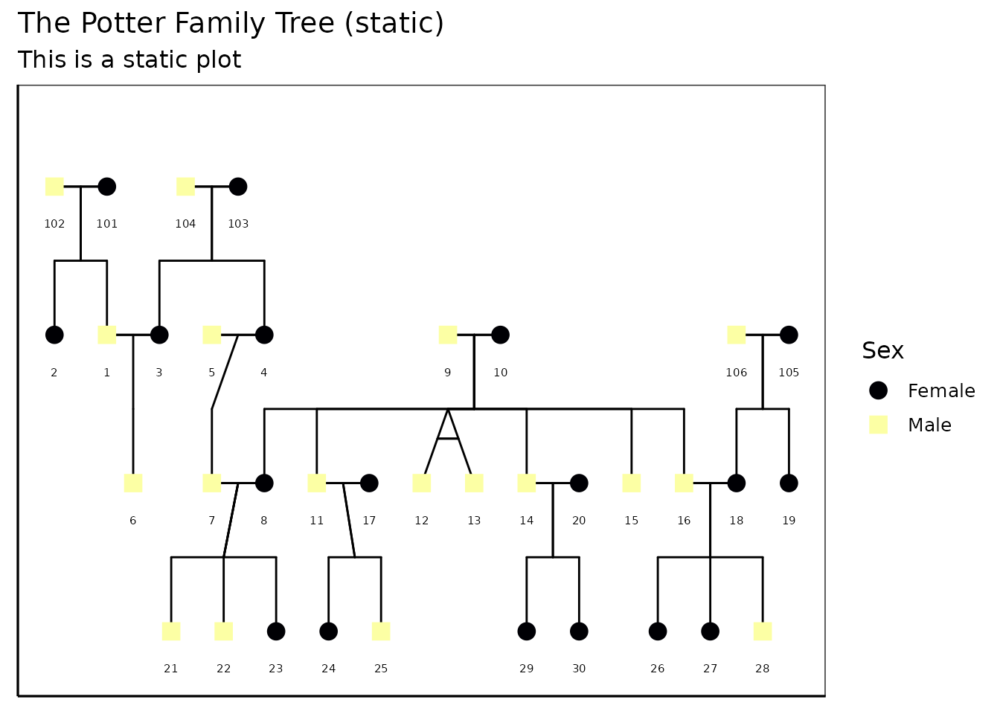

Extended More Complex Pedigree Plots with ggPedigreeInteractive
Source:vignettes/articles/v11_extendedinteractiveplots.Rmd
v11_extendedinteractiveplots.Rmd
library(ggpedigree) # ggPedigree lives here
library(BGmisc) # helper utilities & example data
library(ggplot2) # ggplot2 for plotting
library(viridis) # viridis for color palettes
library(tidyverse) # for data wranglingCustomising labels and tool‑tips
ggPedigreeInteractive() accepts the same config list as
ggPedigree(), plus the tooltip_columns argument for hover
text. Below we enable node labels, nudge them upward a little, color by
sex, and show both the personID and name fields in the
hover:
plt <- ggPedigreeInteractive(
potter,
famID = "famID",
personID = "personID",
momID = "momID",
dadID = "dadID",
config = list(
label_nudge_y = .25,
label_include = TRUE,
label_method = "geom_text",
sex_color_include = TRUE
),
tooltip_columns = c("personID", "name")
)
pltFurther customisation
Adding tooltips
Because the function returns a Plotly object, you can layer additional modifications on top:
plt2 <- plt %>%
plotly::layout(
title = "The Potter Family Tree (interactive)",
hoverlabel = list(bgcolor = "white"),
margin = list(l = 50, r = 50, t = 50, b = 50)
) %>%
plotly::config(displayModeBar = TRUE)
plt2You can also save the widget as standalone HTML:
htmlwidgets::saveWidget(
plt,
file = "potter_interactive.html",
selfcontained = TRUE
)
# Note: The above code will save the widget in the current working directory.Static Plot customisation
You can also create a static version of the plot using the
return_static argument. This is useful for generating
high-quality images for reports or publications. The static plot can be
further customized using ggplot2 functions. It can also be plotted using
plotly::ggplotly() to retain interactivity.
static <- ggPedigreeInteractive(
potter,
famID = "famID",
personID = "personID",
momID = "momID",
dadID = "dadID",
config = list(
label_nudge_y = .25,
label_include = TRUE,
label_method = "geom_text",
sex_color_include = TRUE,
return_static = TRUE
),
tooltip_columns = c("personID", "name")
)The static plot can be further customized using ggplot2 functions.
static_plot <- static +
ggplot2::labs(
title = "The Potter Family Tree (static)",
subtitle = "This is a static plot"
) +
theme_bw(base_size = 12) +
theme(
panel.grid.major = element_blank(),
panel.grid.minor = element_blank(),
panel.background = element_blank(),
axis.line = element_line(colour = "black"),
axis.text.x = element_blank(),
axis.text.y = element_blank(),
axis.ticks.x = element_blank(),
axis.ticks.y = element_blank(),
axis.title.x = element_blank(),
axis.title.y = element_blank()
) + scale_color_viridis(
option = "inferno",
discrete = TRUE,
labels = c("Female", "Male", "Unknown")
)
#> Scale for colour is already present.
#> Adding another scale for colour, which will replace the existing scale.
static_plot
You can also convert the static plot back to an interactive plot
using plotly::ggplotly():
plt2 <- plotly::ggplotly(static_plot,
tooltip = "text",
width = NULL,
height = NULL
)
plt2Customizing the interactive plot
You can customize the interactive plot further by modifying the
layout, adding titles, and adjusting hover labels. The
plotly::layout() function allows you to set various layout
options such as title, margins, and hover label styles.
library(BGmisc)
data(hazard)
df <- hazard
ggPedigreeInteractive(
df,
famID = "famID",
personID = "ID",
momID = "momID",
dadID = "dadID",
config = list(
code_male = 0,
status_column = "affected",
label_nudge_y = .25,
label_include = TRUE,
include_tooltip = TRUE,
label_method = "geom_text",
sex_color_include = TRUE
),
tooltip_columns = c("personID", "birthYr", "onsetYr", "deathYr")
) %>%
plotly::layout(
title = "Hazard Pedigree (interactive)",
hoverlabel = list(bgcolor = "white"),
margin = list(l = 50, r = 50, t = 50, b = 50)
) %>%
plotly::config(displayModeBar = TRUE)
#> Warning in buildPlotConfig(default_config = default_config, config = config, :
#> The following config values are not recognized by getDefaultPlotConfig():
#> include_tooltipConclusion
ggPedigreeInteractive() provides a powerful way to
visualize pedigree data interactively. By leveraging the capabilities of
Plotly, users can explore their data in a more dynamic and engaging
manner. The function is designed to be flexible, allowing for
customization of labels, tooltips, and overall aesthetics.